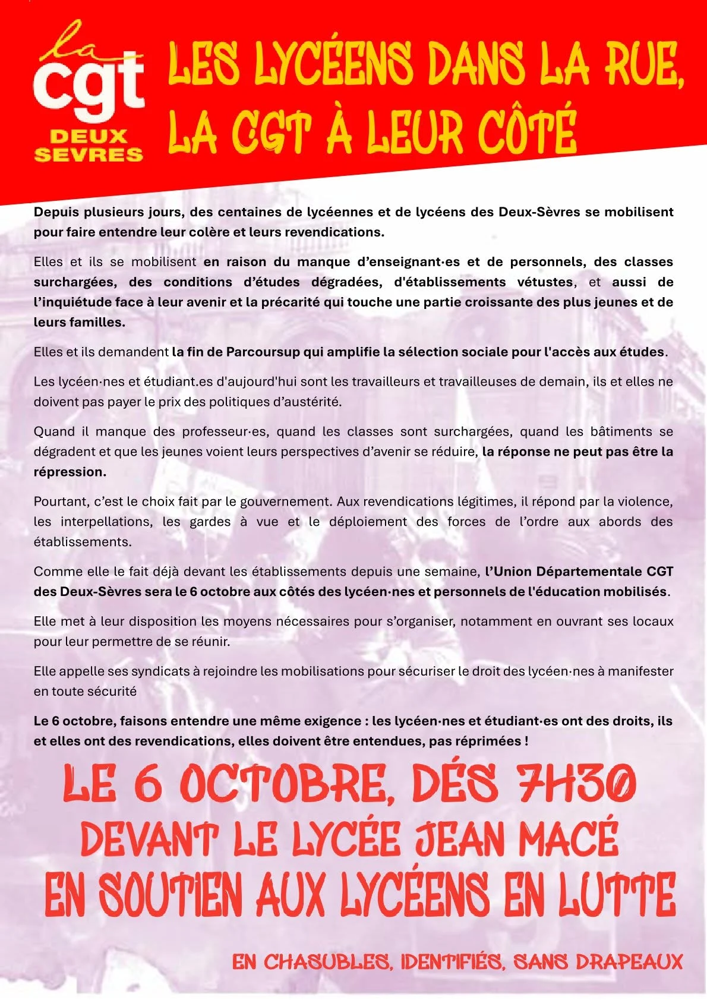

Publication relayée par le PCF 79
La CGT 79 aux côtés des lycéens mobilisés
Date de mise à jour indiquée par Facebook · 5 octobre 2026
Texte de la publication · CGT 79 Deux-Sèvres
Depuis plusieurs jours, des centaines de lycéennes et de lycéens des Deux-Sèvres se mobilisent pour faire entendre leur colère et leurs revendications. Comme elle le fait déjà devant les établissements depuis une semaine, l’Union Départementale CGT des Deux-Sèvres sera le 6 octobre aux côtés des lycéen·nes et personnels de l'éducation mobilisés.
Elle met à leur disposition les moyens nécessaires pour s’organiser, notamment en ouvrant ses locaux pour leur permettre de se réunir. Elle appelle ses syndicats à rejoindre les mobilisations pour sécuriser le droit des lycéen·nes à manifester en toute sécurité
Le 6 octobre, faisons entendre une même exigence : les lycéen·nes et étudiant·es ont des droits, ils et elles ont des revendications, elles doivent être entendues, pas réprimées !
Repères éditoriaux
Nous avons relayé l’appel de la CGT des Deux-Sèvres pour le 6 octobre. La CGT y annonçait qu’elle ouvrirait ses locaux aux lycéens et appelait ses syndicats à défendre leur droit à manifester.

Sources
CGT 79 Deux-Sèvres · publication relayée par le PCF 79 · fil Facebook et rapport Meta · AR-0002-FB-00664
À lire aussi · 6 octobre. « Faisons entendre nos revendications ! »